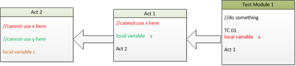
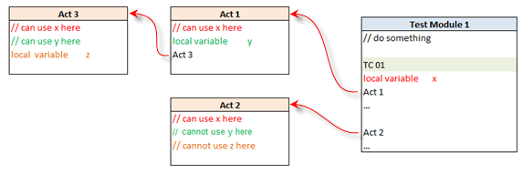
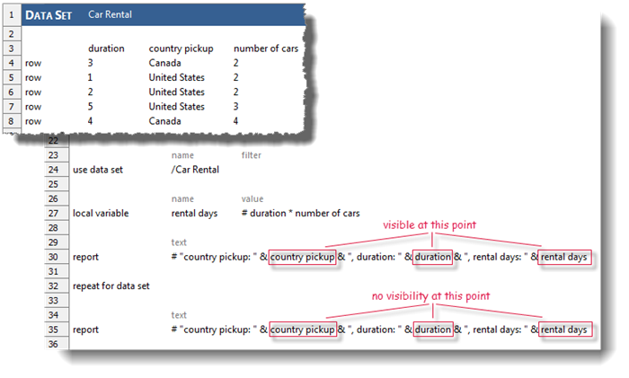
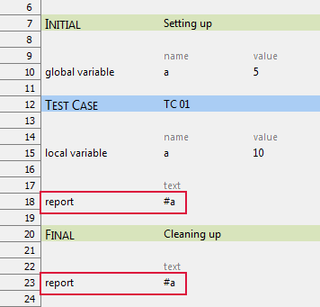

Variables
Variables are placeholders that contain values for later use in one or more action lines, and which allow for easy substitution of values within given action lines.
Variables act as containers for values that are:- unknown during test development,
- made to vary across iterations (repetitions) of test segments (for data-driven testing),
- retrieved from the automation (from a get-type action, for instance), or
- returned from a user-defined action.
Variable scope
A global variable, once declared within the test run, remains present throughout the execution of all test modules and invoked actions within a test run. If the global variable action is called twice with the same variable name, the second invocation merely assigns a new value to the existing global variable. (Note, however, that the set global variable action is intended specifically for the assigning of new values to existing global variables.)
A global variable, once declared, remains visible throughout all sections of the test module and its invoked actions within the execution run. If the global variable action is called twice with the same variable name, the second invocation merely assigns a new value to the existing global variable. (Note, however, that the set global variable action is intended specifically for the assigning of new values to existing global variables.)
- All local variables declared prior to the first test case (regardless of whether an
INITIALsection exists), have scope throughout the entire test module, including in theFINALsection. (It is recommended that such variables be declared in theINITIALsection.) - If a local variable is declared inside a
TEST CASEsection, the scope of that local variable is limited to the test case. - If a local variable is declared inside a
FINALsection, that local variable's scope lasts from the point of its declaration to the end of the test module. - If a local variable is declared inside an action, that local variable has scope within the entire action following its declaration, but not to any actions or test module higher up in the calling chain. Note that, from the standpoint of scope, an action argument is identical to a local variable declared at the beginning of the action.
- Within any given section of a test module or its subordinate actions, when two or more variables of the same name might, individually, have visibility, it is the variable with the most localized scope that is visible at any given point. That is, if test module A has declared local variable x, then calls action B, which also declares local variable x, two instantiations of x exist; action B works with its own copy of x, which disappears after control is returned to test module A.
Scope Binding
- Lexical scoping: The scope of a TestArchitect local variable or argument does not
extend to any called actions.
For
example, as illustrated in the figure below, if local variable x is
declared in test case TC01 and TC01 calls
action Act1, x is available in
TC01, but not in Act1. Likewise, local
variable y declared in action Act1 is not
available in action Act2.
Figure: Lexical scoping

- Dynamic scoping: The scope of a TestArchitect local variable or argument extends to any
action that is called at any point within that scope. Note, however, that the variable's
visibility can be blocked if a variable of the same name is declared within a
called action. (The visibility of competing variables – that is, ones with the same name
and overlapping scope – is always awarded to the variable with the more localized
scope.) For example, as illustrated in the figure below, if local variable
x is declared in test case TC01 and
TC01 calls actions Act1 and
Act2, x is visible in
TC01 as well as in Act1 and
Act2, since both Act1 and
Act2 are children of TC01. However, local
variable y declared in Act1 is not visible in
Act2 because Act2 is not a child of
Act1. Likewise, local variable z declared in
action Act3 is not visible in action Act2.
Figure: Dynamic scoping

Since the scope of a local variable is dynamically defined during runtime, it is important to anticipate all dynamic contexts in which that local variable might be used and how scripts may be invoked. For instance, when scripting an action in TestArchitect, you should be aware of when and where that action is used and will be used in the future.
Levels of Variable Scope
The scope of a variable determines its lifetime and visibility. TestArchitect supports the following levels of variable scope:
- Block
scope: TestArchitect supports
block scope for the action use data
set. As discussed in Data setsData sets, the
importation of data with the use data set action is accompanied by
the creation of local variables, one for each column of data. The scope of these
variables is limited to the block of action lines bounded by use data
set at the top and repeat
for data set at the bottom. Additionally, any local variables
declared within the use data set/repeat for data
set block also have their scopes limited to that block. In the example
below, variables country pickup and duration,
derived from the data set, as well as variable rental days,
explicitly declared in the block, are seen to have their scopes limited to the block.

Note: The name of the local variable inside the use data set-repeat for data set block cannot be the same as the name of the data set columns. - Test case scope: A local variable declared within a test case is not available outside of that test case.
- Test module scope: A local variable declared within a test module is not
visible outside of that test module. If it is declared within the
INITIALsection of the test module, it is visible in every test cases of the module. - Action scope: A local variable declared in an action is not visible outside of that action.
- Global scope: During run time, a global variable is visible throughout all sections in the current test module/action subsequent to its declaration. Use the global variable action to declare a global variable.
Using local variables is a good choice for holding temporary values, especially for calculations. Local variables consume memory only when the entity (test module, test case, or action) containing them executes. This memory is reclaimed when the TestArchitect interpreter passes outside of the scope of the variable. By contrast, global variables consume memory resources until the entire execution ends.
The names of local variables are not susceptible to naming conflicts. If there is a naming
conflict, the variable with narrower scope takes precedence. In the following example,
global variable a has scope that extends throughout the entire executing
module, but local variable a is limited in scope to test case TC
01. Since local variable a has narrower scope inside
TC 01 than global variable a, it is local variable
a (not global variable a) that is visible within
test case TC 01, and which is accessed in the report action of line #18.
Hence line #18 reports the value 10, while line #23, where
global variable a is visible, reports 5.

It is common practice to have an action with a name like initialize to assign values to a number of variables used throughout the remainder of a test run, and perhaps shared by several test modules. Each test module would start with a call to initialize to obtain the latest values for the variables.
Share Via...